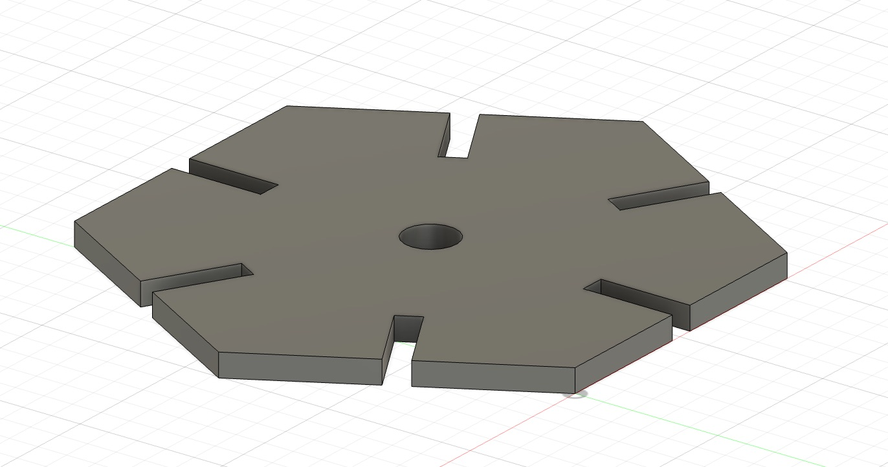
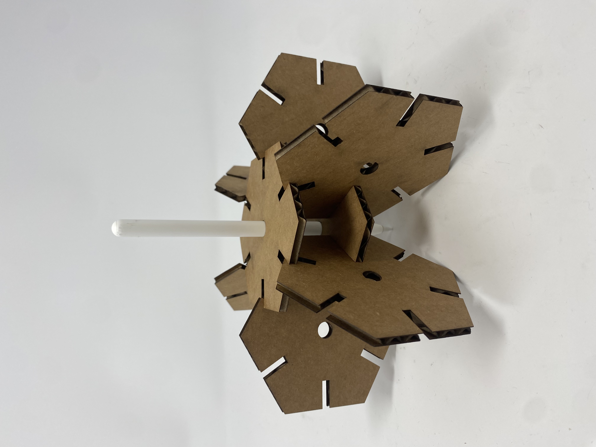
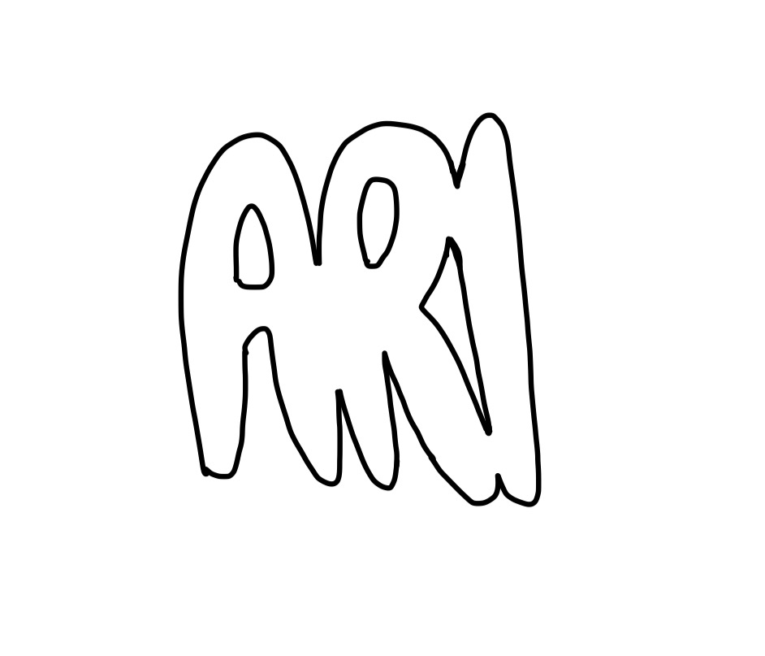
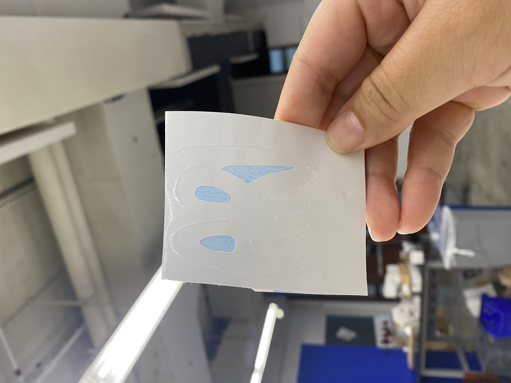
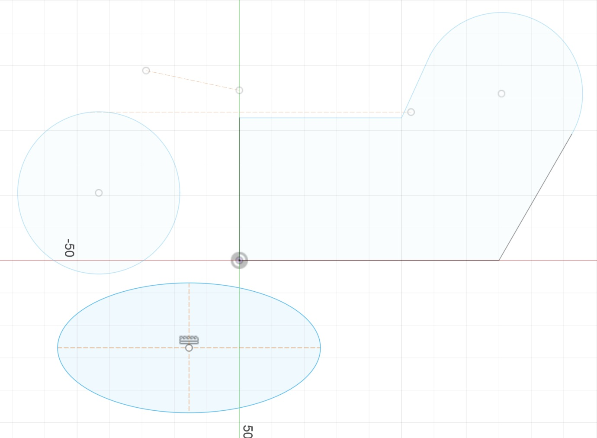

<h1 style= "text-align: center;">
Week 2: 2D Design & Cutting </b></h1>
This weeks assignment consisted of (1) creating a press-fit construction kit (2) working through a Fusion 360 tutorial and (3) selecting 2 household objects, measuring them using calipers and modeling them in Fusion 360.
<h2 style= "text-align: center;">
Part 1: Press-Fit Construction Kit (and stickers) </b></h2>
In this part of the assignment, I made a press-fit construction kit that could be assembled in multiple ways. In addition to measuring the thickness of my cardboard that I was going to laser cut, I also had to account for kerf. I had the idea of creating a sort of holder for my apple pencil so I measured the diameter of my apple pencil to create a circle in the middle of my design.
My measurements ended up being (1) thickness: 4.4 mm and (2) *experimental* kerf: 0.2 mm.
Here is an image of my design that was prototyped using Fusion 360:
<div class="image-text-container" style="margin-bottom: 20px;">
<img class="image" src="fusion1.jpeg" alt="screenshot" width="400" height="300">
<p> My prototype is snowflake inspired!</p>
</div>
<div class="image-text-container" style="margin-top: 20px;">

<p> This is the 3D version of my design visualized on Fusion. </p>
</div>
<h3 style= "text-align: center;">
Laser Cutting! </b></h3>
I then used the laser cutter to cut out my designs and pieced them together. To start, I only cut out two pieces to see if I measured the amount of kerf correctly. Luckily, my pieces fit togther very nicely and very snug so I proceeded to print out 6 more pieces. I printed a total of 8 pieces. I put them together in this pattern (see below) and used it as a holder for my Apple pencil!
<div class="image-text-container" style="margin-bottom: 20px;">
<img class="image" src="cut1.jpeg" alt="screenshot" width="400" height="300">
<p> Pieced together cuts!</p>
</div>
<div class="image-text-container" style="margin-top: 20px;">

<p> My cardboard pieces with the Apple pencil inside. </p>
</div>
<h3 style= "text-align: center;">
Stickers! </b></h3>
I also drew out and printed a sticker, which you can see below!
<div class="image-text-container" style="margin-bottom: 20px;">

<p> Sticker idea that I drew on GoodNotes and then transferred. </p>
</div>
<div class="image-text-container" style="margin-top: 20px;">

<p> Final sticker! </p>
</div>
<h2 style= "text-align: center;">
Part 2: Fusion 360 Walk-Through </b></h2>
In this part of the assignment, I walked through this <a href="https://www.youtube.com/watch?v=vVFYrBClkPc" target="_blank">YouTube video</a>. I have attached an image below of my Fusion workspace following the YouTube video!
<div class="image-text-container" style="margin-top: 20px;">

<p> In the tutorial, I learned how to create lines, arcs, and ellipses. I also learned to use trim, construction lines, setting dimensions and applying constraints. </p>
</div>
<h2 style= "text-align: center;">
Part 3: Modeling Two Household Objects </b></h2>